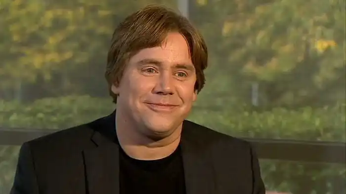

Стівен Чбоскі (Stephen Chbosky) — американський письменник, сценарист і режисер. Насамперед відомий як автор підліткового роману виховання "Привіт, це Чарлі! або Переваги сором'язливих" (1999), який увійшов до списку бестселерів за версією газети "Нью-Йорк таймс". Окрім того, Чбоскі став сценаристом та режисером однойменної екранізації, знятої за участі Логана Лермана, Емми Вотсон та Езри Міллера. 2005 року написав сценарій для фільму "Богема", а 2017 року — для музичного фільму-фентезі "Красуня і Чудовисько" (у співавторстві з Еваном Спіліотопулосом). У 2006—2008 роках транслювався серіал "Єрихон", співзасновником, співавтором та виконавчим продюсером якого став Чбоскі. Нещодавно Чбоскі також став режисером сімейної драми "Диво", знятої за участі Джулії Робертс, Овена Вілсона та Джейкоба Трембле.
Чбоскі народився 25 січня 1970 року в Піттсбургу, Пенсільванія, США. Провів своє дитинство у Аппер Сент-Клер, околиці Пітсбурга, Пенсильванія. Син Лі Меєр, спеціалістки з оформлення податкової документації і заповнення податкових декларацій, та Фреда Ґ. Чбоскі, службовця сталеливарної компанії та радника фінансового директора. Також має сестру Стейсі, яка вийшла заміж за режисера Джона Еріка Довдла. Виховувався у дусі католицької віри.
Будучи підлітком, Чбоскі "полюбляв доцільне поєднання класики, жахів та фентезі". Значний вплив на його письменницьку діяльність справив роман "Ловець у житі" Дж. Д. Селінджера та твори таких письменників як Френсіс Скотт Фіцджеральд та Теннессі Вільямс. 1988 року Чбоскі закінчив середню школу Аппер Сент-Клер та невдовзі познайомився зі Стюартом Штерном, сценаристом фільму "Бунтар без причини" (1955). Штерн став "добрим другом та ментором" Чбоскі, справивши значний вплив на його кар'єру. 1992 року Чбоскі закінчив Університет Південної Каліфорнії, де навчався на сценариста. Дебютував як сценарист, режисер та актор завдяки незалежному фільму "Чотири кути" та у такий спосіб привернув до себе увагу кіно-агентів. 1994 року Чбоскі працював на "дещо іншим видом книжки" аніж "Привіт, це Чарлі! або Переваги сором'язливих", але коли він написав рядок: "Гадаю, це лиш одна з переваг сором'язливих" все змінилося. Чбоскі згадує: "Написавши цей рядок, я зупинився і усвідомив, що десь у цьому реченні затаїлася дитина, яку я насправді намагався віднайти". Після декількох років роздумів, Чбоскі розпочав роботу над епістолярним романом "Привіт, це Чарлі! або Переваги сором'язливих", що розповідає про інтелектуальне та емоційне зростання підлітка на ім'я Чарлі, який розпочав свій перший рік навчання у старших класах середньої школи. Книга несе напівбіографічний характер; за словами Чбоскі: "Я співвідношу себе з Чарлі…але моє життя у середній школі дещо відрізнялося". 1999 року світ побачив його дебютний роман — "Привіт, це Чарлі! або Переваги сором'язливих", який вийшов у видавництві "MTV Букс" та відразу здобув успіх серед підлітків; вже наступного року книга стала одним із бестселерів. 2005 року Чбоскі написав сценарій для бродвейського поп-мюзиклу "Богема", який отримав змішані відгуки критиків. Наприкінці 2005 року також розпочав роботу над сценарієм фільму "Переваги скромників", однойменної екранізації власної книги. Чбоскі став сценаристом та режисером фільму "Переваги скромників", екранізації його однойменного роману. Робота над адаптацією розпочались 2011 року, а сам фільм побачив світ восени 2012 року. Головні ролі виконували Логана Лермана, Емми Вотсон та Ерзи Міллера. 2013 року Чбоскі номінувався на премію Гільдії сценаристів Америки у категорії "Найкращий адаптований сценарій",а 2013 року фільм здобув кінопремію "Незалежний дух" в номінації "Найкращий дебютний фільм" та премію "Вибір народу" у номінації "Найкраще драматичне кіно". Чбоскі переписав оригінальний сценарій Евана Спіліотопулоса для фільму-ремейку "Красуня і Чудовисько" (2017), режисером якого став Білл Кондон, а головну роль виконала Емма Вотсон. Чбоскі та Вотсон стали близькими друзями після зйомок фільму "Переваги скромників". Адаптація зберезгла ознаки оригінального анімаційного фільму 1991 року, зокрема зберігся весь музичний супровід. Стрічка побачила світ 17 березня 2017 року. Чбоскі виступив режисером фільму "Диво" та разом із Джеком Торном та Стівом Конрадом на основі однойменного роману Р. Дж. Паласіо написав сценарій для майбутньої стрічки. Головні ролі виконували Джулії Робертс, Овена Вілсона та Джейкоба Трембле. Фільм побачив світ 17 листопада 2017 року. 15 листопада 2017 року кіностудія "Дісней" повідомила, що Чбоскі підписав з ними контракт та забов'язався стати режисером та сценаристом фільму "Зачарований принц", екранізації однойменної казки. 2018 року Чбоскі став режесером фільму "Дорогий Еван Генсен", прем'єра якого відбулася 2021 року. У жовтні 2019 року Чбоскі опублікував роман жахів "Уявний друг", що став бестселлером за версією "Нью-Йорк таймс".